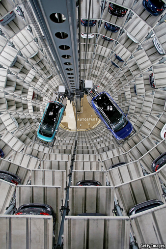

2021-03-09T15:44:37+00:00
Carmaking
汽车制造
汽車製造
ICEy conditions ahead
内燃机不熄
內燃機不熄
Volkswagen’s boss wants more electric cars—but won’t kill the petrol engine
大众的老板想造更多电动汽车——但不会扼杀汽油发动机
大眾的老闆想造更多電動汽車——但不會扼殺汽油發動機
THE SCRAMBLE to electrify motoring resembles a car race. Tesla and like-minded startups, unencumbered by the legacy of the internal combustion engine (ICE), are surging up the straight. Behind them, jostling for position at the first corner, are the established carmakers, urged on by ever-tightening government deadlines for clean power to supersede fossil fuels. Many are calling time on the ICE. On February 17th Ford’s European division said that it would go all-electric by 2030. Days earlier Jaguar Land Rover (JLR), an Indian-owned firm based in Britain, announced that the posh Jaguar brand would become fully electric by 2025. In January General Motors (GM) promised it would make only zero-emissions cars after 2035.
汽车制造商争相推进电气化的局面就像一场赛车。特斯拉和理念相近的创业公司不用背负内燃机遗产的包袱，正在直线道上轻快冲刺。在它们后头，老牌企业正在第一个弯道你争我抢——政府以清洁能源取代化石燃料的最后期限不断收紧，驱赶着它们向前。许多公司都宣称要淘汰内燃机。2月17日，福特的欧洲部门表示将于2030年之前实现全电动化。此前几天，总部在英国的印度公司捷豹路虎（JLR）宣布，豪车品牌捷豹将在2025年前完全电动化。1月，通用汽车承诺在2035年后只生产零排放汽车。
汽車製造商爭相推進電氣化的局面就像一場賽車。特斯拉和理念相近的創業公司不用背負內燃機遺產的包袱，正在直線道上輕快衝刺。在它們後頭，老牌企業正在第一個彎道你爭我搶——政府以清潔能源取代化石燃料的最後期限不斷收緊，驅趕着它們向前。許多公司都宣稱要淘汰內燃機。2月17日，福特的歐洲部門表示將於2030年之前實現全電動化。此前幾天，總部在英國的印度公司捷豹路虎（JLR）宣布，豪車品牌捷豹將在2025年前完全電動化。1月，通用汽車承諾在2035年後只生產零排放汽車。
No one is dedicating more resources to electrification than Volkswagen Group, says Herbert Diess, the German giant’s boss. The company plans to spend around €73bn ($88bn) over the next five years on battery power and digitisation, he says. “The competition is now taking the same decisions,” Mr Diess notes, alluding to rival firms’ pledges.
德国巨头大众集团的老板赫伯特·迪斯（Herbert Diess）说，大众在电气化方面投入的资源比谁都多。他表示，公司计划未来五年为电池动力和数字化投入约730亿欧元（880亿美元）。“竞争者也在做同样的决定。”迪斯说，暗指对手公司也都做出了类似的承诺。
德國巨頭大眾集團的老闆赫伯特·迪斯（Herbert Diess）說，大眾在電氣化方面投入的資源比誰都多。他表示，公司計劃未來五年為電池動力和數字化投入約730億歐元（880億美元）。“競爭者也在做同樣的決定。”迪斯說，暗指對手公司也都做出了類似的承諾。
Among the old guard, VW is indeed firmly in the driving seat. A fifth of the millions of cars it sells will be electric by 2025. Some analysts think that by then VW will churn out more electric cars than Tesla, today’s market leader. Mr Diess is more circumspect. A year ago he was confident his firm would lead the world in electric vehicles in ten years’ time. Now he is less sure, admitting that Tesla’s surging shares give it the resources to grow fast. Although Apple’s talks with carmakers such as Hyundai and Nissan did not go anywhere, the tech giant’s evident interest in an iCar could yet make it a force to be reckoned with, Mr Diess admits. But he still thinks that the electric race is Volkswagen’s to lose, not least because the cashflow from its traditional business gives him the money to invest in the future.
在传统派中，大众确实稳坐掌舵者之位。到2025年，它销售的千万辆汽车中将有五分之一是电动汽车。一些分析师认为，届时大众的电动汽车产量将超过今天的市场领导者特斯拉。迪斯的态度更谨慎些。一年前他还很有把握大众会在十年内成为电动汽车领域里的全球第一。现在他没那么确定了，承认飙升的股价赋予了特斯拉实现快速增长所需的资源。尽管苹果与现代及日产等汽车制造商的谈判没有任何进展，但迪斯承认，这个科技巨头对iCar显而易见的兴趣仍可能使之成为一股不容小觑的力量。但他还是认为大众将是这场电气化竞赛的赢家，尤其是因为来自传统业务的现金流为他提供了投资未来的资金。
在傳統派中，大眾確實穩坐掌舵者之位。到2025年，它銷售的千萬輛汽車中將有五分之一是電動汽車。一些分析師認為，屆時大眾的電動汽車產量將超過今天的市場領導者特斯拉。迪斯的態度更謹慎些。一年前他還很有把握大眾會在十年內成為電動汽車領域裡的全球第一。現在他沒那麼確定了，承認飆升的股價賦予了特斯拉實現快速增長所需的資源。儘管蘋果與現代及日產等汽車製造商的談判沒有任何進展，但迪斯承認，這個科技巨頭對iCar顯而易見的興趣仍可能使之成為一股不容小覷的力量。但他還是認為大眾將是這場電氣化競賽的贏家，尤其是因為來自傳統業務的現金流為他提供了投資未來的資金。
Indeed, despite all the noise about electrification the old ICE technology has plenty of mileage left in it. Unlike his counterparts at Ford Europe, JLR or GM, Mr Diess is unwilling to set a date for the demise of the fossil-fuel engine. His electric plans for 2025 still leave four-fifths of his firm’s cars powered by petrol or diesel. Volkswagen is a global company and, he says, many markets will not be ready for electric cars by 2035. Coal-fired power stations will still provide part of the electricity that might charge batteries, making electric cars a moot proposition. In places such as Latin America ICE-friendly biofuels will be the prevailing green alternative to petrol.
的确，尽管围绕电气化锣鼓喧天，但内燃机这种老旧技术并没有那么快就走向穷途末路。与福特欧洲、捷豹路虎或通用汽车的老板们不同，迪斯还不愿为化石燃料发动机设定一个大限之日。按照他的2025年电动车计划，大众到那时仍有五分之四的汽车是由汽油或柴油驱动。大众是一家全球性企业，而按迪斯的说法，在2035年之前许多市场都还不能为电动汽车做好准备。为电池充电的电力仍有一部分将来自燃煤发电站，这让电动汽车成了一个无实际意义的主张。在拉丁美洲等地，对内燃机友好的生物燃料将成为汽油的主要绿色替代品。
的確，儘管圍繞電氣化鑼鼓喧天，但內燃機這種老舊技術並沒有那麼快就走向窮途末路。與福特歐洲、捷豹路虎或通用汽車的老闆們不同，迪斯還不願為化石燃料發動機設定一個大限之日。按照他的2025年電動車計劃，大眾到那時仍有五分之四的汽車是由汽油或柴油驅動。大眾是一家全球性企業，而按迪斯的說法，在2035年之前許多市場都還不能為電動汽車做好準備。為電池充電的電力仍有一部分將來自燃煤發電站，這讓電動汽車成了一個無實際意義的主張。在拉丁美洲等地，對內燃機友好的生物燃料將成為汽油的主要綠色替代品。
Scratch the surface and the ICE seems to be lurking even at firms which claim to be forsaking it. GM says its target is an aspiration. Citigroup, a bank, notes that the majority of investment by established carmakers is still directed towards conventional power trains. BloombergNEF, an energy-analysis firm, reckons that more than one in three cars sold in 2040 will be powered by petrol and diesel. Some will sport the Volkswagen logo. ■
刮开表面的油漆，会看到内燃机潜藏在那些即便是声称要丢弃它的公司中。通用汽车表示自己设定的目标其实是一种抱负。花旗集团指出，老牌汽车制造商的大部分投资仍导向了传统动力系统。能源分析公司彭博新能源财经（BloombergNEF）估计，2040年售出的汽车中超过三分之一将是汽油车和柴油车。其中有些安着大众的车标。
刮開表面的油漆，會看到內燃機潛藏在那些即便是聲稱要丟棄它的公司中。通用汽車表示自己設定的目標其實是一種抱負。花旗集團指出，老牌汽車製造商的大部分投資仍導向了傳統動力系統。能源分析公司彭博新能源財經（BloombergNEF）估計，2040年售出的汽車中超過三分之一將是汽油車和柴油車。其中有些安着大眾的車標。
For the full interview with Herbert Diess go to economist.com/VWpod
赫伯特·迪斯的完整采访请见economist.com/VWpod
赫伯特·迪斯的完整採訪請見economist.com/VWpod